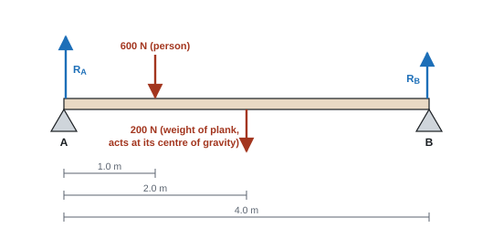

Moments
A force can make something turn as well as move. How strongly it turns depends on how big the force is and how far its line of action is from the pivot, which is why door handles sit far from the hinges and a long spanner undoes a stiff nut. This page covers moments, centre of gravity and the principle of moments: everything you need for beams, planks, ladders and see-saws.
Spec15Moment of a force
Use moment of a force = Fx, where x is the perpendicular distance from the axis of rotation to the line of action of the force.
Moment of a force
F = force (N), x = perpendicular distance from the pivot to the line of action of the force (m). Unit: N m (N cm if you work in cm, but convert for final answers).
- A moment is a turning effect, clockwise or anticlockwise.
- Bigger force or bigger perpendicular distance → bigger moment. That's why door handles are far from the hinge and long spanners help.
- If the force is at angle θ to a bar of length d, the perpendicular distance is d sin θ. Or resolve the force: only the component perpendicular to the bar turns it. A force whose line of action passes through the pivot has zero moment.
an angled force
A 40 N force acts on the end of a 0.25 m spanner at 60° to the spanner.
Perpendicular distance = 0.25 sin 60° = 0.217 m. Moment = 40 × 0.217 = 8.7 N m.
Same answer by resolving: perpendicular component = 40 sin 60° = 34.6 N; 34.6 × 0.25 = 8.7 N m.
A force \(F\) acts at a distance \(d\) along a spanner from the pivot, at an angle \(\theta\) to the spanner.
Method 1: perpendicular distance. The line of action passes the pivot at a perpendicular distance \(x = d\sin\theta\) (right-angled triangle with hypotenuse \(d\)):
\[ \text{moment} = F x = F\,(d\sin\theta) \]Method 2: resolve the force. Split \(F\) into a component along the spanner, \(F\cos\theta\), and one perpendicular to it, \(F\sin\theta\). The component along the spanner points straight through the pivot, so its moment is zero. Only the perpendicular part turns:
\[ \text{moment} = (F\sin\theta)\, d \]The two are the same product, just grouped differently:
\[ \boxed{\text{moment} = F d \sin\theta} \]It is biggest when \(\theta = 90^\circ\) (push at right angles) and zero when \(\theta = 0\) (push along the spanner, through the pivot).
- "Use of moment = Fx"; "use of trigonometry for the perpendicular distance / component".
- Unit N m (not N m⁻¹, not N) (WPH11 Oct 2024 Q13).
- Why a moment falls as the angle changes: "the perpendicular distance (x cos θ) decreases".
Often asked as: moment with an angled force; why a moment changes as something rotates; unit MCQs; the moment a motor must provide.
- Using the distance along the bar instead of the perpendicular distance.
- Unit N m⁻¹. Moments are in N m (don't write J, even though the base units match).
- Couple: two equal, opposite, parallel forces not in line. No resultant force, but a turning effect: moment of a couple = one force × perpendicular distance between them (steering wheel, tap).
- Toppling: an object topples when its centre of gravity moves beyond the edge of its base, because the weight then gives a moment that turns it further over. Low centre of gravity and a wide base = stable (WPH11 Oct 2021 Q19).
- Estimating a length you aren't given (a forearm is 30–50 cm) and using it (WPH11 Jun 2019 Q15).
A mechanic pulls on the end of a 0.25 m spanner with a force of 80 N at 60° to the spanner. (a) Calculate the moment about the nut. (b) What force at right angles to the spanner, at the same point, would give the same moment?
Show solution
\[ \text{(a)}\ \ x = 0.25\sin 60^\circ = 0.217\ \text{m}, \qquad \text{moment} = 80 \times 0.217 = 17.3\ \text{N m} \] \[ \text{(b)}\ \ F = \frac{17.3}{0.25} = 69.3\ \text{N} \]Pulling at right angles does the same job with about 11 N less effort.
Spec16Centre of gravity and the principle of moments
Use the centre of gravity of an extended body and apply the principle of moments to an extended body in equilibrium.
Centre of gravity
The centre of gravity is the point through which the weight of an object appears to act. Every particle of the object has weight; the centre of gravity is where one single total weight can be drawn with the same effect.
- For a uniform object (rod, beam, plank) it's at the geometric centre.
- Irregular rod: balance it on a knife edge; the balance point is the centre of gravity.
- Irregular flat shape (lamina): hang it from a pin with a plumb line, draw the vertical line, repeat from a second hole; the lines cross at the centre of gravity.
Equilibrium
An object is in equilibrium when there is:
- no resultant force (forces up = forces down, forces left = forces right), and
- no resultant moment about any point.
Principle of moments: for an object in equilibrium, the total clockwise moment about any point = the total anticlockwise moment about that point.

two supports
Find the support forces RA and RB for the plank in the figure.
Take moments about A (so RA has no moment).
Clockwise: 600 × 1.0 + 200 × 2.0 = 1000 N m. Anticlockwise: RB × 4.0.
RB × 4.0 = 1000 → RB = 250 N.
No resultant force: RA + RB = 600 + 200 → RA = 550 N.
Check with moments about B: 550 × 4.0 = 600 × 3.0 + 200 × 2.0 = 2200 N m. RA is bigger because the person is nearer A.
Method
- Draw every force on the diagram, including the object's own weight at its centre of gravity and both support forces. Mark the distances.
- State the pivot you take moments about. Choose a point where an unknown force acts.
- Total clockwise moment = total anticlockwise moment.
- Use "up = down" for the second unknown.
- Angled forces: resolve them, or find the perpendicular distance with trig.
A rod has a weight \(W_1\) whose centre of gravity is at distance \(x_1\) from one end, and a load \(W_2\) is fixed at distance \(x_2\). We want the single point \(\bar{x}\) where the total weight \(W_1 + W_2\) gives the same moment.
Take moments about the end. The total moment of the separate weights must equal the moment of the total weight acting at \(\bar{x}\):
\[ W_1 x_1 + W_2 x_2 = (W_1 + W_2)\,\bar{x} \]Rearrange:
\[ \boxed{\bar{x} = \frac{W_1 x_1 + W_2 x_2}{W_1 + W_2}} \]It is a weighted average of the positions. A 1 m rod of weight 4 N with a 1 N load on one end has its centre of gravity at \((4 \times 0.5 + 1 \times 1.0)/5 = 0.60\ \text{m}\): shifted towards the load, but not all the way.
A non-uniform rod 1.00 m long has a weight of 4.0 N. A 2.0 N weight is hung from the 0 cm end, and the rod then balances on a knife edge at the 40 cm mark. Where is the rod's centre of gravity?
Show solution
Take moments about the knife edge. The 2.0 N weight is 0.40 m to the left, so it gives an anticlockwise moment. The rod's weight must give an equal clockwise moment, so its centre of gravity is a distance \(d\) to the right:
\[ 2.0 \times 0.40 = 4.0 \times d \quad\Rightarrow\quad d = 0.20\ \text{m} \]The centre of gravity is at the \(40 + 20 = 60\) cm mark.
- Centre of gravity: "the point through which the weight (of the object) appears to act" / "may be taken to act" (WPH11 Jun 2026 Q16, Oct 2023 Q15).
- Equilibrium (2 marks): "no resultant force"; "no resultant moment (about any point)" (WPH11 Jan 2024 Q18). "Clockwise moment = anticlockwise moment" is not enough: it must say total or sum of moments (WPH11 Oct 2025 Q20).
- Calculation marks: "use of moment = Fx", "use of the principle of moments", "use of ΣF = 0 for the other support", then comparison and conclusion.
- Drawing the weight at the centre of gravity is a shortcut: the weight "does not really act at one point" (WPH11 Jan 2023 Q13).
Often asked as: define centre of gravity; state the two conditions for equilibrium; shelves, cranes, bridges, arms and doors with one or two unknown forces; explain why a force changes when a load moves; toppling.
- "The weight acts at the centre of gravity" or "all the mass is concentrated there": the word appears is the mark.
- Giving only the moments condition and forgetting "no resultant force" (or the reverse).
- Forgetting the beam's own weight or the second support force; not stating the pivot (a lost mark in WPH11 Oct 2022 Q13).
- Using the full width of a door as the distance to its centre of gravity instead of half (WPH11 Jan 2024 Q18).
- "Forces are balanced" on its own adds nothing.
- Model limits: an arm is not a uniform beam, so its centre of gravity isn't at its middle (WPH11 Jun 2019 Q15).
- Comparing a calculated moment with the most a fixing can take, and concluding (WPH11 Jun 2022 Q13).
- A book pushed over a shelf edge tips when its centre of gravity passes the edge (WPH11 Jan 2020 Q13).
A child of weight 300 N sits 1.5 m from the pivot of a uniform see-saw, which is pivoted at its centre. (a) Where must a 450 N child sit to balance it? (b) The see-saw weighs 200 N. What is the upward force from the pivot?
Show solution
(a) Take moments about the pivot. The see-saw's own weight acts at the pivot, so it has no moment there:
\[ 300 \times 1.5 = 450 \times x \quad\Rightarrow\quad x = 1.0\ \text{m} \](b) The resultant force is zero too, so the pivot pushes up with the total weight: \(300 + 450 + 200 = 950\ \text{N}\).
A uniform plank 4.0 m long and of weight 200 N rests on supports at each end, A and B. A person of weight 600 N stands 1.0 m from A. Calculate the forces from the two supports.
Show solution
Take moments about A, so the unknown force at A drops out. The plank's weight acts at its centre, 2.0 m from A:
\[ R_B \times 4.0 = 200 \times 2.0 + 600 \times 1.0 = 1000 \quad\Rightarrow\quad R_B = 250\ \text{N} \]Forces balance vertically:
\[ R_A = 200 + 600 - 250 = 550\ \text{N} \]Check with moments about B: \(R_A \times 4.0 = 200 \times 2.0 + 600 \times 3.0 = 2200\), so \(R_A = 550\ \text{N}\). The support nearer the person takes more of the load.
The same plank now rests on support A at one end and support B 3.0 m from A, so 1.0 m overhangs. How far from A can the 600 N person walk before the plank tips?
Show solution
Just as it is about to tip about B, the plank lifts off A, so \(R_A = 0\). Take moments about B. The plank's weight acts 1.0 m on the A side of B; the person stands a distance \(x - 3.0\) beyond B:
\[ 600\,(x - 3.0) = 200 \times 1.0 \quad\Rightarrow\quad x - 3.0 = 0.33\ \text{m} \]The person can walk to 3.33 m from A, only a third of a metre past B. Try it in the simulation.
For the ladder in the diagram, calculate (a) the force S from the wall and (b) the normal reaction R and friction F at the ground.
Show solution
(a) Take moments about the foot, so that R and F (both acting there) drop out. S is horizontal, so its perpendicular distance from the foot is the height of the top of the ladder, \(5.0\sin 60^\circ\). W is vertical, so its perpendicular distance is the horizontal distance to the midpoint, \(2.5\cos 60^\circ\):
\[ S \times 5.0\sin 60^\circ = 150 \times 2.5\cos 60^\circ \] \[ S \times 4.33 = 187.5 \quad\Rightarrow\quad S = 43.3\ \text{N} \](About the foot, W turns the ladder clockwise, towards the wall, and S turns it anticlockwise.)
(b) Resolve vertically: the only vertical forces are R and W, so \(R = 150\ \text{N}\). Resolve horizontally: F must balance S, so \(F = 43.3\ \text{N}\) towards the wall.
If the floor can't provide 43.3 N of friction, the foot slides out. Repeat the moments step for a general angle \(\theta\) and you get \(F = S = \dfrac{W}{2\tan\theta}\): the steeper the ladder, the less friction it needs, which is why ladders are safer at steep angles.
Quick checks
The same 50 N force is applied to the end of a spanner in four different directions. Which gives the largest moment about the nut?
The moment is \(Fd\sin\theta\), largest when \(\sin\theta = 1\). Pushing along the spanner sends the line of action through the nut, so the moment is zero.
A uniform metre rule is pivoted at its 30 cm mark. It balances horizontally when a 0.20 kg mass hangs from the 10 cm mark. What is the mass of the rule?
The rule's weight acts at its centre, the 50 cm mark, 20 cm from the pivot. The mass is also 20 cm from the pivot on the other side, so the masses must be equal: \(0.20g \times 0.20 = Mg \times 0.20\).
Which statement must be true for an extended body in equilibrium?
Equilibrium needs both conditions: no resultant force (no linear acceleration) and no resultant moment (no rotational acceleration). A couple is the classic case with zero resultant force but a non-zero moment, and it is not in equilibrium.
A person walks along a plank that rests on two supports, from support A towards support B. What happens to the support forces?
Taking moments about A, \(R_B\) grows in proportion to the person's distance from A. The total weight doesn't change, so \(R_A + R_B\) is constant and \(R_A\) must fall by the same amount.
A card hung from a pin comes to rest with its centre of gravity directly below the pin. Why?
Anywhere else, the line of action of the weight misses the pin, so the weight has a moment about the pin that swings the card. It can only stay at rest when that moment is zero.
A 20 N force acts on a door 0.80 m from the hinge. Its line of action is at 30° to the door. What is its moment about the hinge?
The perpendicular distance is \(0.80\sin 30^\circ = 0.40\ \text{m}\), so the moment is \(20 \times 0.40 = 8.0\ \text{N m}\). Using cos gives 13.9 N m, and ignoring the angle gives 16.0 N m.